基礎情報 - About me
主テーマ研究 - Research1
副テーマ研究 - Research2
学会発表 - Conference
経歴 - History
スキル - Skills
趣味 - Hobbies
更新記録 - Updates
基礎情報 - About me

市川千馬（Kazuma ICHIKAWA）
北陸先端科学技術大学院大学 博士前期課程
E-mail1: ichikawa.sngk0201(at)gmail.com
E-mail2: s2510006(at)jasit.ac.jp
研究テーマ1: 家紋における環境適応的デザインの体系的・定量的検証と応用
研究テーマ2: 霊性を見出すデザインの探求
主テーマ研究 - Research1
家紋における環境適応的デザインの体系的・定量的検証と応用
副テーマ研究 - Research2
霊性を見出すデザインの探求
学会発表 - Conference
モノに霊性を見出す装置としてのカプセルトイ
都市生活者が失った価値基準を再発見するには
市川千馬，上平崇仁
日本デザイン学会第72回春季研究発表大会｜ポスターセッションB｜2025.6.29 11:30 - 12:30
confitページ文化多様性の検証に向けた家紋の計量分析の試み
：形態情報のみに着目した探索的検討
市川千馬，中分遥
第139回人文科学とコンピュータ研究発表会｜一般口頭発表（ショート）｜2025.8.3 13:40 - 14:00
人文科学とコンピュータ CH139経歴 - History
略歴
| 2002.6 - | 生まれる |
|---|---|
| 2018.4 - 2021.3 | 神奈川県立元石川高等学校 卒業 |
| 2021.4 - 2025.3 | 専修大学 ネットワーク情報学部 ネットワーク情報学科 卒業 |
| 2025.4 - | 北陸先端科学技術大学大学院 先端科学技術研究科 博士前期課程 |
職歴
| 2021.7 - 2024.3 | 個別指導塾 講師 |
|---|---|
| 2022.4 - 2022.7 | 専修大学 ネットワーク情報学部 ネットワーク情報学科 SA（入門プログラミング） |
| 2023.4 - 2023.7 | 専修大学 ネットワーク情報学部 ネットワーク情報学科 SA（情報表現演習） |
| 2023.9 - 2023.1 | 専修大学 ネットワーク情報学部 ネットワーク情報学科 SA（応用演習フィジカルコンピューティング） |
| 2024.4 - 2024.7 | 専修大学 ネットワーク情報学部 ネットワーク情報学科 SA（入門プログラミング） |
| 2024.4 - 2024.7 | 専修大学 ネットワーク情報学部 ネットワーク情報学科 SA（リテラシー演習） |
| 2024.4 - 2025.1 | 専修大学 ネットワーク情報学部 ネットワーク情報学科 SA（プロジェクト） |
| 2024.4 - 2025.1 | 専修大学 ネットワーク情報学部 ネットワーク情報学科 SA（フィールド演習） |
| 2025.5 - | 専修大学 ネットワーク情報学部 ネットワーク情報学科 TA（情報と社会） |
スキル - Skills
趣味 - Hobbies
ものづくり，歩く，自然の写真を撮る，天体観望，ゲームを遊ぶ
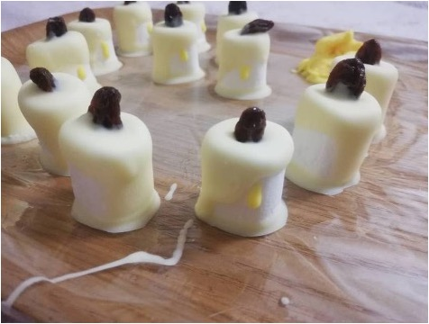
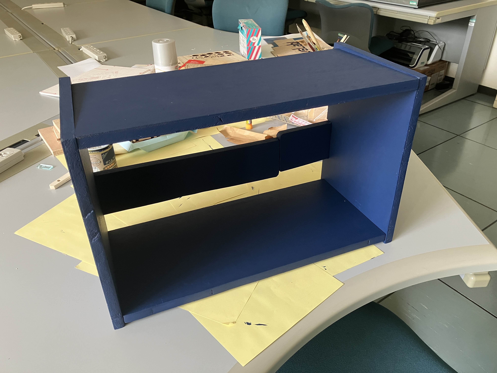
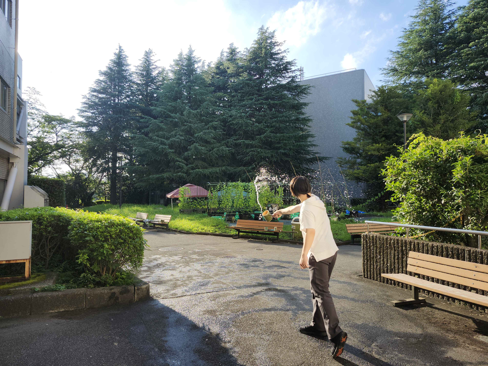
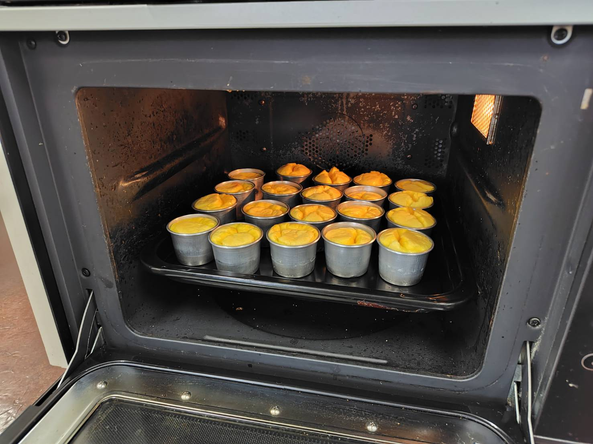
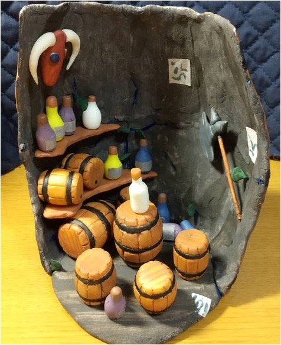
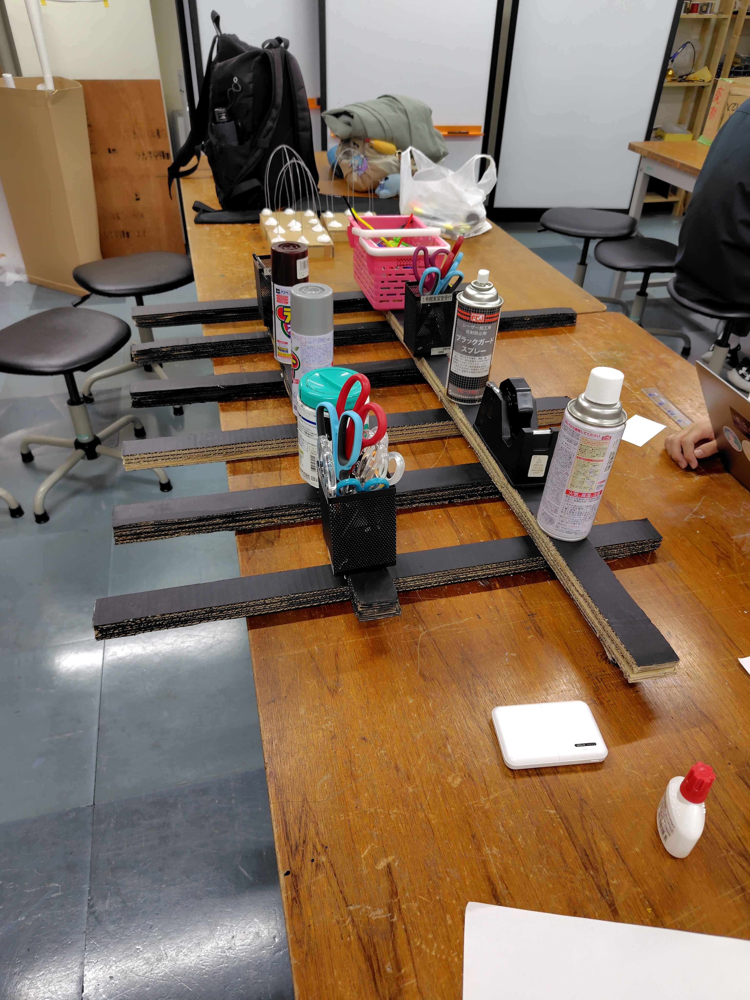
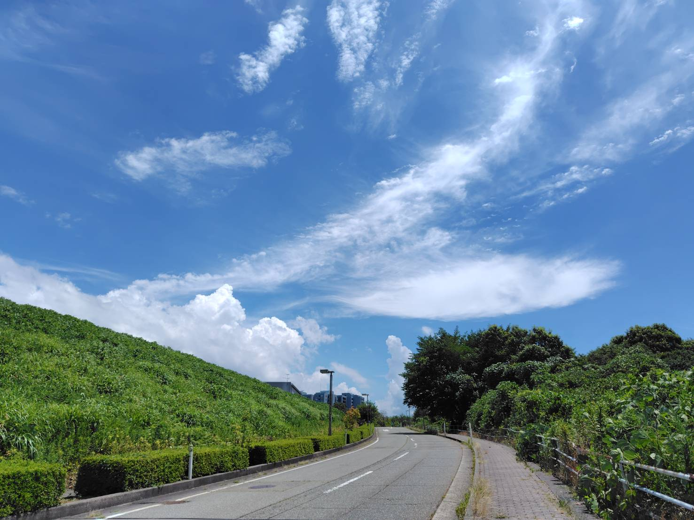
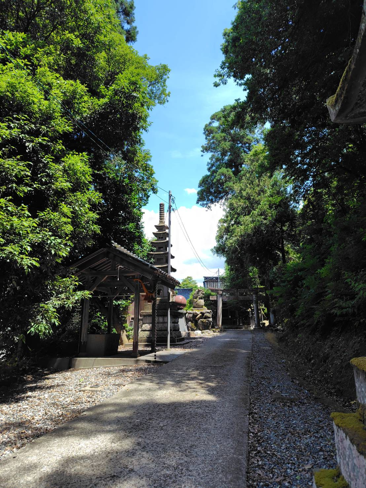
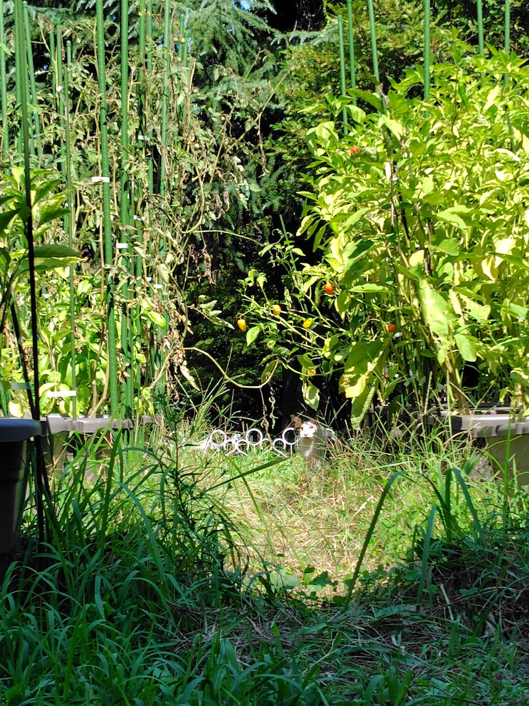
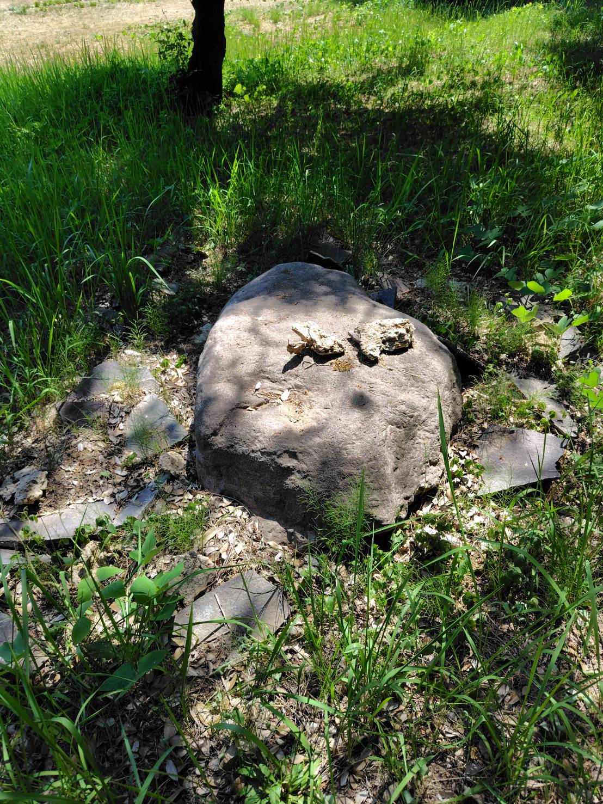
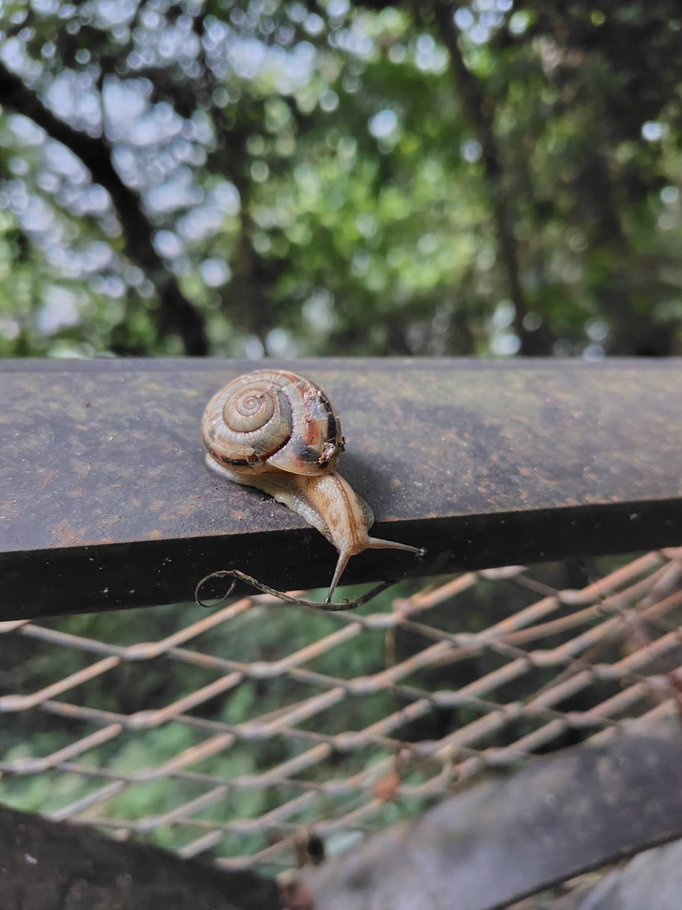

×
更新記録 - Updates
- 2025.8.9｜本websiteを作り始める